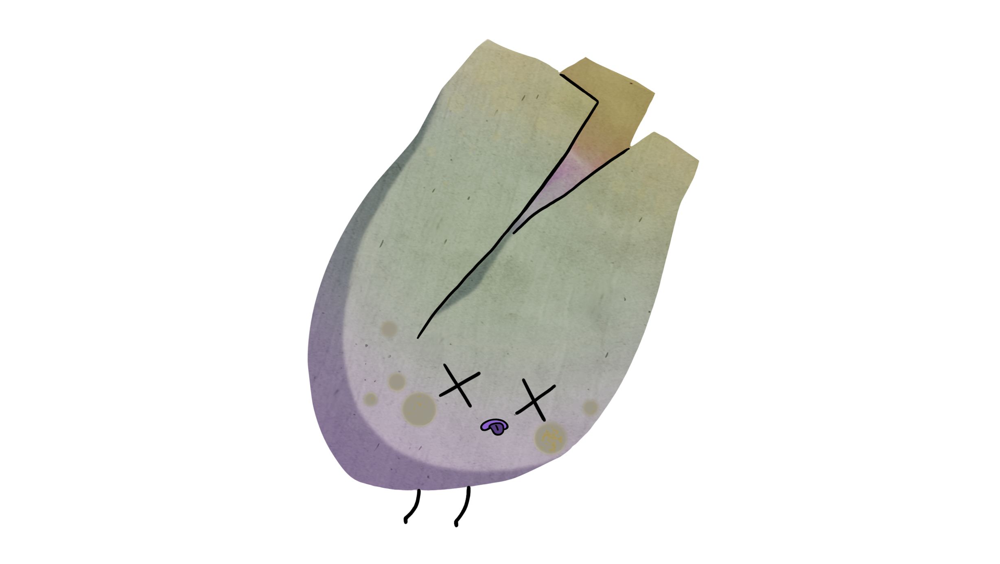
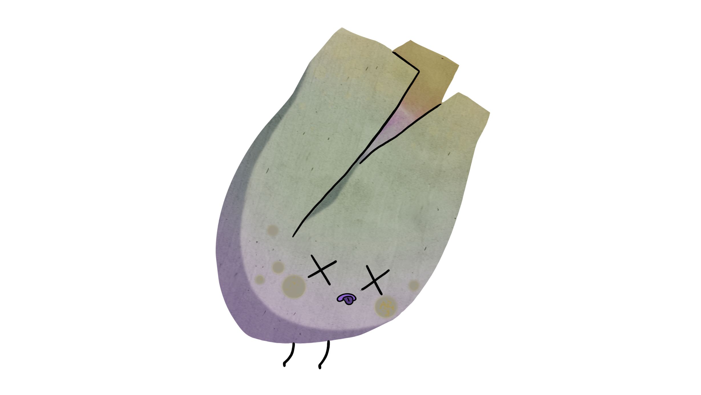

i need water, asap!
quick! i need sun!
i'm so squished! i need room now!
 

you grew a black walnut treeple!
- Size: Up to 30 m tall
- Moisture: Prefers moist soils
- Shade: Prefers full sun
- Soil: Prefers well-drained,rich soils
- Intolerant to: Shade
The black walnut treeple roots release juglone, a substance that inhibits the growth of many other plants. However, many native trees tolerate juglone well, including maples, pawpaw, northern hackberry, honey locust, eastern redcedar, oaks, hickories, sycamore, eastern white cedar, hemlock and cherries, just to name a few.
you grew a black spruce treeple!
- Size: Between 20 and 30 metres tall, trunk usually between 23 and 26 centimetres in diameter
- Moisture: Tolerates different moisture levels
- Shade: Tolerates partial shade
- Soil: Grows in a variety of soils
- Intolerant to: Not much
The red squirrel eats the tips of the black spruce treeple, which can create a thick dense clump of branches at the top of the tree.
you grew a jack pine treeple!
- Size: Up to 24 metres tall, trunk is up to 60 centimetres in diameter
- Moisture: Can tolerate a range of moisture levels but prefres dry soil
- Shade: Needs full sun
- Soil: Grows in almost any soil, but prefers sandy to coarse loamy soils
- Intolerant to: Shade
Like other pines, the jack pine treeple thrives after forest fires. The heat opens up the pinecones to release seeds, and kills off competing plants.
you grew an eastern white cedar treeple!
- Size: 15 metres tall, trunk 30 centimetres in diameter
- Moisture: Prefers moist soil
- Shade: Tolerates some shade
- Soil: Grows in a variety of soils
- Intolerant to: Road salt
Eastern white cedar trees more than 700 years old have been found in Ontario’s Niagara Escarpment!
you grew an american beech treeple!
- Size: Up to 25 metres tall
- Moisture: moist, well drained soils
- Shade: Very shade-tolerant
- Soil: prefers rich soils
- Intolerantto: dry soil with poor drainage
The distinctive triangular nuts are eaten by people as well as wildlife.